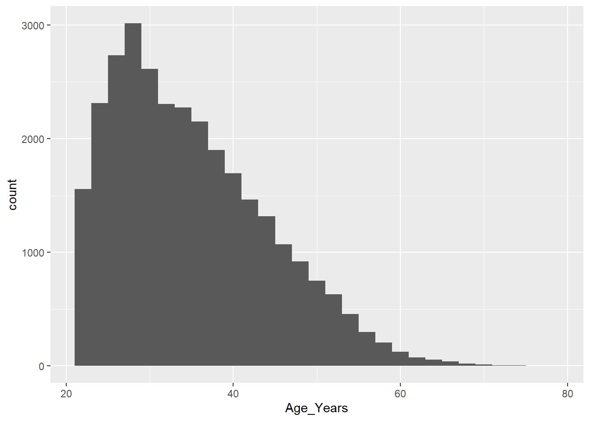
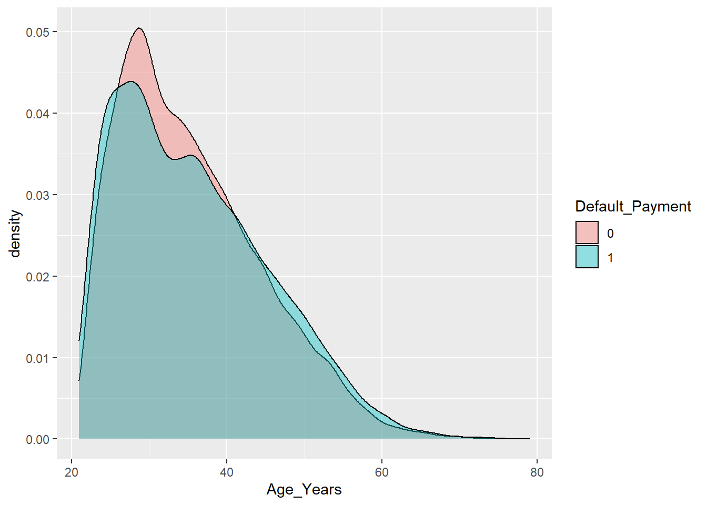

Bank Credit Card Fraud Detection Project with Logistic Regression
library(dplyr)
library(ggplot2)
library(caret)
library(caTools)
library(ROSE)## Warning: package 'ROSE' was built under R version 4.0.30.1 Data Structure
data <- read.csv('creditcard.csv',stringsAsFactors = T)
data <- as_tibble(data)
str(data)## tibble [30,000 x 25] (S3: tbl_df/tbl/data.frame)
## $ Customer.ID : int [1:30000] 1 2 3 4 5 6 7 8 9 10 ...
## $ Credit_Amount : num [1:30000] 20000 220000 90000 50000 50000 50000 500000 200000 240000 20000 ...
## $ Gender : int [1:30000] 2 2 2 2 1 1 1 2 2 1 ...
## $ Academic_Qualification: int [1:30000] 2 2 2 2 2 1 1 2 3 3 ...
## $ Marital : int [1:30000] 1 2 2 1 1 2 2 2 1 2 ...
## $ Age_Years : int [1:30000] 24 26 34 37 57 37 29 23 28 35 ...
## $ Repayment_Status_Jan : int [1:30000] 2 0 0 0 0 0 0 0 0 0 ...
## $ Repayment_Status_Feb : int [1:30000] 2 2 0 0 0 0 0 0 0 0 ...
## $ Repayment_Status_March: int [1:30000] 0 0 0 0 0 0 0 0 2 0 ...
## $ Repayment_Status_April: int [1:30000] 0 0 0 0 0 0 0 0 0 0 ...
## $ Repayment_Status_May : int [1:30000] 0 0 0 0 0 0 0 0 0 0 ...
## $ Repayment_Status_June : int [1:30000] 0 2 0 0 0 0 0 0 0 0 ...
## $ Jan_Bill_Amount : num [1:30000] 3933 3683 39339 46990 8637 ...
## $ Feb_Bill_Amount : num [1:30000] 3103 1735 14037 48333 5570 ...
## $ March_Bill_Amount : num [1:30000] 689 2682 23559 49292 35835 ...
## $ April_Bill_Amount : num [1:30000] 0 3272 24332 29324 20940 ...
## $ May_Bill_Amount : num [1:30000] 0 3455 14848 28858 18146 ...
## $ June_Bill_Amount : num [1:30000] 0 3261 15548 28547 18131 ...
## $ Previous_Payment_Jan : num [1:30000] 0 0 1619 3000 3000 ...
## $ Previous_Payment_Feb : num [1:30000] 679 2000 2500 2029 36672 ...
## $ Previous_Payment_March: num [1:30000] 0 1000 1000 1200 10000 657 59000 0 552 0 ...
## $ Previous_Payment_April: num [1:30000] 0 1000 1000 1100 9000 ...
## $ Previous_Payment_May : num [1:30000] 0 0 1000 1069 689 ...
## $ Previous_Payment_June : num [1:30000] 0 2000 5000 1000 679 ...
## $ Default_Payment : int [1:30000] 1 1 0 0 0 0 0 0 0 0 ...0.2 no of rows and columns
nrow(data)## [1] 30000ncol(data)## [1] 250.3 data preparation
0.3.1 propotion of event is smaller than proportion of non event
prop.table(table(data$Default_Payment))##
## 0 1
## 0.7788 0.22120.4 Convert to factor
cols.to.factor <- c("Gender","Academic_Qualification","Marital","Repayment_Status_Jan","Repayment_Status_Feb","Repayment_Status_March","Repayment_Status_April","Repayment_Status_May","Repayment_Status_June","Default_Payment")
data[,cols.to.factor] <- lapply(data[,cols.to.factor],factor)
str(data)## tibble [30,000 x 25] (S3: tbl_df/tbl/data.frame)
## $ Customer.ID : int [1:30000] 1 2 3 4 5 6 7 8 9 10 ...
## $ Credit_Amount : num [1:30000] 20000 220000 90000 50000 50000 50000 500000 200000 240000 20000 ...
## $ Gender : Factor w/ 2 levels "1","2": 2 2 2 2 1 1 1 2 2 1 ...
## $ Academic_Qualification: Factor w/ 6 levels "1","2","3","4",..: 2 2 2 2 2 1 1 2 3 3 ...
## $ Marital : Factor w/ 4 levels "0","1","2","3": 2 3 3 2 2 3 3 3 2 3 ...
## $ Age_Years : int [1:30000] 24 26 34 37 57 37 29 23 28 35 ...
## $ Repayment_Status_Jan : Factor w/ 7 levels "0","1","2","3",..: 3 1 1 1 1 1 1 1 1 1 ...
## $ Repayment_Status_Feb : Factor w/ 7 levels "0","1","2","3",..: 3 3 1 1 1 1 1 1 1 1 ...
## $ Repayment_Status_March: Factor w/ 7 levels "0","1","2","3",..: 1 1 1 1 1 1 1 1 3 1 ...
## $ Repayment_Status_April: Factor w/ 7 levels "0","1","2","3",..: 1 1 1 1 1 1 1 1 1 1 ...
## $ Repayment_Status_May : Factor w/ 6 levels "0","2","3","4",..: 1 1 1 1 1 1 1 1 1 1 ...
## $ Repayment_Status_June : Factor w/ 6 levels "0","2","3","4",..: 1 2 1 1 1 1 1 1 1 1 ...
## $ Jan_Bill_Amount : num [1:30000] 3933 3683 39339 46990 8637 ...
## $ Feb_Bill_Amount : num [1:30000] 3103 1735 14037 48333 5570 ...
## $ March_Bill_Amount : num [1:30000] 689 2682 23559 49292 35835 ...
## $ April_Bill_Amount : num [1:30000] 0 3272 24332 29324 20940 ...
## $ May_Bill_Amount : num [1:30000] 0 3455 14848 28858 18146 ...
## $ June_Bill_Amount : num [1:30000] 0 3261 15548 28547 18131 ...
## $ Previous_Payment_Jan : num [1:30000] 0 0 1619 3000 3000 ...
## $ Previous_Payment_Feb : num [1:30000] 679 2000 2500 2029 36672 ...
## $ Previous_Payment_March: num [1:30000] 0 1000 1000 1200 10000 657 59000 0 552 0 ...
## $ Previous_Payment_April: num [1:30000] 0 1000 1000 1100 9000 ...
## $ Previous_Payment_May : num [1:30000] 0 0 1000 1069 689 ...
## $ Previous_Payment_June : num [1:30000] 0 2000 5000 1000 679 ...
## $ Default_Payment : Factor w/ 2 levels "0","1": 2 2 1 1 1 1 1 1 1 1 ...0.5 Re-labelling
levels(data$Gender) <-c("Male","Female")
levels(data$Marital) <-c("Unknown","Married","Single","Do not Prefer To say")
levels(data$Academic_Qualification) <- c('Undergraduate', 'Graduate', 'Postgraduate', 'Professional', 'Others', 'Unknown')
levels(data$Repayment_Status_Jan) <- c('Paid on time','Payment delay for one month', 'Payment delay for two months', 'Payment delay for three months', 'Payment delay for four months', 'Payment delay for five months', 'Payment delay for six months')
levels(data$Repayment_Status_Feb) <- c('Paid on time','Payment delay for one month', 'Payment delay for two months', 'Payment delay for three months', 'Payment delay for four months', 'Payment delay for five months', 'Payment delay for six months')
levels(data$Repayment_Status_March) <- c('Paid on time','Payment delay for one month', 'Payment delay for two months', 'Payment delay for three months', 'Payment delay for four months', 'Payment delay for five months', 'Payment delay for six months')
levels(data$Repayment_Status_April) <- c('Paid on time','Payment delay for one month', 'Payment delay for two months', 'Payment delay for three months', 'Payment delay for four months', 'Payment delay for five months', 'Payment delay for six months')
levels(data$Repayment_Status_May) <- c('Paid on time','Payment delay for one month', 'Payment delay for two months', 'Payment delay for three months', 'Payment delay for four months', 'Payment delay for five months', 'Payment delay for six months')
levels(data$Repayment_Status_June) <- c('Paid on time','Payment delay for one month', 'Payment delay for two months', 'Payment delay for three months', 'Payment delay for four months', 'Payment delay for five months', 'Payment delay for six months')0.5.1 Total Age Distribution
ggplot(data = data,aes(x=Age_Years))+geom_histogram()## `stat_bin()` using `bins = 30`. Pick better value with `binwidth`.
0.6 Age Distribution with respect to Default Payment
ggplot(data = data,aes(x=Age_Years))+geom_density(aes(fill=Default_Payment),alpha=0.4)
0.6.1 Splitting Data into Train and Test Set
set.seed(10)
splitter <- sample.split(data$Default_Payment ,SplitRatio = 0.8)
train <- data[splitter,]
test <- data[!splitter,]0.7 Modelling with All Variables
model <- glm(Default_Payment~.-Customer.ID,data=train,family = binomial())
summary(model)##
## Call:
## glm(formula = Default_Payment ~ . - Customer.ID, family = binomial(),
## data = train)
##
## Deviance Residuals:
## Min 1Q Median 3Q Max
## -2.2580 -0.6014 -0.5133 -0.3207 3.4048
##
## Coefficients:
## Estimate Std. Error
## (Intercept) -2.756e+00 5.378e-01
## Credit_Amount -1.347e-06 1.663e-07
## GenderFemale -1.266e-01 3.603e-02
## Academic_QualificationGraduate 1.400e-02 4.154e-02
## Academic_QualificationPostgraduate -2.270e-02 5.591e-02
## Academic_QualificationProfessional -1.136e+00 4.675e-01
## Academic_QualificationOthers -1.211e+00 2.759e-01
## Academic_QualificationUnknown -4.848e-01 4.487e-01
## MaritalMarried 1.328e+00 5.295e-01
## MaritalSingle 1.147e+00 5.297e-01
## MaritalDo not Prefer To say 1.335e+00 5.524e-01
## Age_Years 2.432e-03 2.191e-03
## Repayment_Status_JanPayment delay for one month 7.308e-01 5.614e-02
## Repayment_Status_JanPayment delay for two months 2.032e+00 6.212e-02
## Repayment_Status_JanPayment delay for three months 2.107e+00 1.705e-01
## Repayment_Status_JanPayment delay for four months 1.929e+00 3.353e-01
## Repayment_Status_JanPayment delay for five months 1.512e+00 5.428e-01
## Repayment_Status_JanPayment delay for six months 4.739e-01 8.049e-01
## Repayment_Status_FebPayment delay for one month -2.871e-01 5.798e-01
## Repayment_Status_FebPayment delay for two months 1.934e-01 6.731e-02
## Repayment_Status_FebPayment delay for three months 1.370e-01 1.695e-01
## Repayment_Status_FebPayment delay for four months -5.539e-01 3.511e-01
## Repayment_Status_FebPayment delay for five months 1.221e+00 7.676e-01
## Repayment_Status_FebPayment delay for six months 1.483e+00 1.034e+00
## Repayment_Status_MarchPayment delay for one month -1.126e+01 2.294e+02
## Repayment_Status_MarchPayment delay for two months 3.093e-01 6.641e-02
## Repayment_Status_MarchPayment delay for three months 2.577e-01 2.069e-01
## Repayment_Status_MarchPayment delay for four months -1.381e-01 4.525e-01
## Repayment_Status_MarchPayment delay for five months -5.632e-01 7.179e-01
## Repayment_Status_MarchPayment delay for six months -1.066e-01 7.876e-01
## Repayment_Status_AprilPayment delay for one month 1.323e+01 2.294e+02
## Repayment_Status_AprilPayment delay for two months 3.116e-01 7.292e-02
## Repayment_Status_AprilPayment delay for three months 1.558e-01 2.472e-01
## Repayment_Status_AprilPayment delay for four months 5.947e-01 4.741e-01
## Repayment_Status_AprilPayment delay for five months -8.922e-01 7.627e-01
## Repayment_Status_AprilPayment delay for six months -1.367e+01 1.467e+02
## Repayment_Status_MayPayment delay for one month 3.001e-01 8.007e-02
## Repayment_Status_MayPayment delay for two months 6.348e-02 2.402e-01
## Repayment_Status_MayPayment delay for three months -4.483e-01 5.046e-01
## Repayment_Status_MayPayment delay for four months 1.159e+00 9.376e-01
## Repayment_Status_MayPayment delay for five months 1.418e+01 1.467e+02
## Repayment_Status_JunePayment delay for one month 2.900e-01 7.045e-02
## Repayment_Status_JunePayment delay for two months 7.052e-01 2.447e-01
## Repayment_Status_JunePayment delay for three months 2.007e-01 5.298e-01
## Repayment_Status_JunePayment delay for four months -3.368e-02 7.087e-01
## Repayment_Status_JunePayment delay for five months 7.158e-01 8.157e-01
## Jan_Bill_Amount -8.311e-07 3.975e-07
## Feb_Bill_Amount 2.223e-06 5.898e-07
## March_Bill_Amount 8.233e-07 8.313e-07
## April_Bill_Amount -6.872e-07 8.271e-07
## May_Bill_Amount 1.766e-07 1.488e-06
## June_Bill_Amount -1.084e-06 1.318e-06
## Previous_Payment_Jan -1.363e-05 2.432e-06
## Previous_Payment_Feb -4.544e-06 1.541e-06
## Previous_Payment_March 3.301e-07 1.415e-06
## Previous_Payment_April -4.536e-06 1.932e-06
## Previous_Payment_May -1.208e-06 1.668e-06
## Previous_Payment_June -3.966e-06 1.538e-06
## z value Pr(>|z|)
## (Intercept) -5.126 2.96e-07 ***
## Credit_Amount -8.099 5.54e-16 ***
## GenderFemale -3.513 0.000443 ***
## Academic_QualificationGraduate 0.337 0.736197
## Academic_QualificationPostgraduate -0.406 0.684791
## Academic_QualificationProfessional -2.431 0.015063 *
## Academic_QualificationOthers -4.391 1.13e-05 ***
## Academic_QualificationUnknown -1.080 0.280002
## MaritalMarried 2.507 0.012167 *
## MaritalSingle 2.166 0.030316 *
## MaritalDo not Prefer To say 2.417 0.015631 *
## Age_Years 1.110 0.266971
## Repayment_Status_JanPayment delay for one month 13.017 < 2e-16 ***
## Repayment_Status_JanPayment delay for two months 32.713 < 2e-16 ***
## Repayment_Status_JanPayment delay for three months 12.358 < 2e-16 ***
## Repayment_Status_JanPayment delay for four months 5.754 8.74e-09 ***
## Repayment_Status_JanPayment delay for five months 2.785 0.005354 **
## Repayment_Status_JanPayment delay for six months 0.589 0.555989
## Repayment_Status_FebPayment delay for one month -0.495 0.620502
## Repayment_Status_FebPayment delay for two months 2.874 0.004059 **
## Repayment_Status_FebPayment delay for three months 0.808 0.418961
## Repayment_Status_FebPayment delay for four months -1.578 0.114638
## Repayment_Status_FebPayment delay for five months 1.591 0.111574
## Repayment_Status_FebPayment delay for six months 1.434 0.151547
## Repayment_Status_MarchPayment delay for one month -0.049 0.960851
## Repayment_Status_MarchPayment delay for two months 4.658 3.20e-06 ***
## Repayment_Status_MarchPayment delay for three months 1.245 0.213112
## Repayment_Status_MarchPayment delay for four months -0.305 0.760139
## Repayment_Status_MarchPayment delay for five months -0.785 0.432743
## Repayment_Status_MarchPayment delay for six months -0.135 0.892365
## Repayment_Status_AprilPayment delay for one month 0.058 0.954010
## Repayment_Status_AprilPayment delay for two months 4.274 1.92e-05 ***
## Repayment_Status_AprilPayment delay for three months 0.630 0.528678
## Repayment_Status_AprilPayment delay for four months 1.254 0.209707
## Repayment_Status_AprilPayment delay for five months -1.170 0.242053
## Repayment_Status_AprilPayment delay for six months -0.093 0.925741
## Repayment_Status_MayPayment delay for one month 3.748 0.000178 ***
## Repayment_Status_MayPayment delay for two months 0.264 0.791591
## Repayment_Status_MayPayment delay for three months -0.888 0.374332
## Repayment_Status_MayPayment delay for four months 1.236 0.216445
## Repayment_Status_MayPayment delay for five months 0.097 0.922980
## Repayment_Status_JunePayment delay for one month 4.117 3.84e-05 ***
## Repayment_Status_JunePayment delay for two months 2.882 0.003957 **
## Repayment_Status_JunePayment delay for three months 0.379 0.704805
## Repayment_Status_JunePayment delay for four months -0.048 0.962091
## Repayment_Status_JunePayment delay for five months 0.878 0.380179
## Jan_Bill_Amount -2.091 0.036533 *
## Feb_Bill_Amount 3.769 0.000164 ***
## March_Bill_Amount 0.990 0.321998
## April_Bill_Amount -0.831 0.406064
## May_Bill_Amount 0.119 0.905531
## June_Bill_Amount -0.822 0.411112
## Previous_Payment_Jan -5.606 2.07e-08 ***
## Previous_Payment_Feb -2.949 0.003191 **
## Previous_Payment_March 0.233 0.815527
## Previous_Payment_April -2.349 0.018845 *
## Previous_Payment_May -0.724 0.468770
## Previous_Payment_June -2.578 0.009942 **
## ---
## Signif. codes: 0 '***' 0.001 '**' 0.01 '*' 0.05 '.' 0.1 ' ' 1
##
## (Dispersion parameter for binomial family taken to be 1)
##
## Null deviance: 25365 on 23999 degrees of freedom
## Residual deviance: 20897 on 23942 degrees of freedom
## AIC: 21013
##
## Number of Fisher Scoring iterations: 110.8 Prediction and Model evaluation
pred <- predict(model,newdata = test,type = 'response')
test$prd <- factor(ifelse(pred>0.5,1,0))
cf <- confusionMatrix(test$prd,reference = test$Default_Payment,positive='1')
cf## Confusion Matrix and Statistics
##
## Reference
## Prediction 0 1
## 0 4438 876
## 1 235 451
##
## Accuracy : 0.8148
## 95% CI : (0.8048, 0.8246)
## No Information Rate : 0.7788
## P-Value [Acc > NIR] : 3.914e-12
##
## Kappa : 0.3501
##
## Mcnemar's Test P-Value : < 2.2e-16
##
## Sensitivity : 0.33986
## Specificity : 0.94971
## Pos Pred Value : 0.65743
## Neg Pred Value : 0.83515
## Prevalence : 0.22117
## Detection Rate : 0.07517
## Detection Prevalence : 0.11433
## Balanced Accuracy : 0.64479
##
## 'Positive' Class : 1
## - Although Accuracy is high 82% but senstivity is low at 32%
- Model does not predict Positive Class(Default Payment=1, event) well enough as compared to non-event( Default Payment=0)
0.9 Model with removing non significant variables
fml <- formula(Default_Payment~Credit_Amount+Marital+Gender+Academic_Qualification+Age_Years+Repayment_Status_Jan+Previous_Payment_Jan)
model2 <- glm(fml,data=train,family = binomial())
summary(model2)##
## Call:
## glm(formula = fml, family = binomial(), data = train)
##
## Deviance Residuals:
## Min 1Q Median 3Q Max
## -1.9237 -0.6151 -0.5200 -0.3541 3.4806
##
## Coefficients:
## Estimate Std. Error
## (Intercept) -2.430e+00 5.160e-01
## Credit_Amount -1.988e-06 1.509e-07
## MaritalMarried 1.155e+00 5.081e-01
## MaritalSingle 9.693e-01 5.084e-01
## MaritalDo not Prefer To say 1.096e+00 5.320e-01
## GenderFemale -1.447e-01 3.546e-02
## Academic_QualificationGraduate 3.788e-02 4.076e-02
## Academic_QualificationPostgraduate -8.681e-03 5.489e-02
## Academic_QualificationProfessional -1.241e+00 4.728e-01
## Academic_QualificationOthers -1.352e+00 2.793e-01
## Academic_QualificationUnknown -6.452e-01 4.586e-01
## Age_Years 2.527e-03 2.158e-03
## Repayment_Status_JanPayment delay for one month 1.033e+00 4.539e-02
## Repayment_Status_JanPayment delay for two months 2.501e+00 5.226e-02
## Repayment_Status_JanPayment delay for three months 2.863e+00 1.527e-01
## Repayment_Status_JanPayment delay for four months 2.466e+00 2.901e-01
## Repayment_Status_JanPayment delay for five months 1.686e+00 4.443e-01
## Repayment_Status_JanPayment delay for six months 1.708e+00 3.633e-01
## Previous_Payment_Jan -1.348e-05 2.175e-06
## z value Pr(>|z|)
## (Intercept) -4.709 2.49e-06 ***
## Credit_Amount -13.175 < 2e-16 ***
## MaritalMarried 2.272 0.023084 *
## MaritalSingle 1.907 0.056558 .
## MaritalDo not Prefer To say 2.061 0.039319 *
## GenderFemale -4.081 4.48e-05 ***
## Academic_QualificationGraduate 0.930 0.352627
## Academic_QualificationPostgraduate -0.158 0.874335
## Academic_QualificationProfessional -2.625 0.008653 **
## Academic_QualificationOthers -4.839 1.30e-06 ***
## Academic_QualificationUnknown -1.407 0.159472
## Age_Years 1.171 0.241665
## Repayment_Status_JanPayment delay for one month 22.748 < 2e-16 ***
## Repayment_Status_JanPayment delay for two months 47.856 < 2e-16 ***
## Repayment_Status_JanPayment delay for three months 18.749 < 2e-16 ***
## Repayment_Status_JanPayment delay for four months 8.500 < 2e-16 ***
## Repayment_Status_JanPayment delay for five months 3.794 0.000149 ***
## Repayment_Status_JanPayment delay for six months 4.702 2.57e-06 ***
## Previous_Payment_Jan -6.197 5.75e-10 ***
## ---
## Signif. codes: 0 '***' 0.001 '**' 0.01 '*' 0.05 '.' 0.1 ' ' 1
##
## (Dispersion parameter for binomial family taken to be 1)
##
## Null deviance: 25365 on 23999 degrees of freedom
## Residual deviance: 21344 on 23981 degrees of freedom
## AIC: 21382
##
## Number of Fisher Scoring iterations: 50.10 Prediction and Model evaluation 2
pred2 <- predict(model2,newdata = test,type = 'response')
test$prd2 <- factor(ifelse(pred2>0.5,1,0))
cf2 <- confusionMatrix(test$prd2,reference = test$Default_Payment,positive='1')
cf2## Confusion Matrix and Statistics
##
## Reference
## Prediction 0 1
## 0 4484 910
## 1 189 417
##
## Accuracy : 0.8168
## 95% CI : (0.8068, 0.8265)
## No Information Rate : 0.7788
## P-Value [Acc > NIR] : 2.381e-13
##
## Kappa : 0.3399
##
## Mcnemar's Test P-Value : < 2.2e-16
##
## Sensitivity : 0.3142
## Specificity : 0.9596
## Pos Pred Value : 0.6881
## Neg Pred Value : 0.8313
## Prevalence : 0.2212
## Detection Rate : 0.0695
## Detection Prevalence : 0.1010
## Balanced Accuracy : 0.6369
##
## 'Positive' Class : 1
## - Model does not improve or worse
- Accuracy and senstivity are about the same at around 82% and 31% respectively
0.10.1 Over Sampling Data
- Handling class Imbalance problem using ROSE package
- Making proportion of default payment status ‘1’ same as ‘0’
newtrainsample <- ovun.sample(fml,data = train,method = 'over',N=37382)$data
summary(newtrainsample)## Credit_Amount Gender Academic_Qualification
## Min. : 20000 Male :15270 Undergraduate:12389
## 1st Qu.: 50000 Female:22112 Graduate :18106
## Median : 200000 Postgraduate : 6429
## Mean : 178248 Professional : 111
## 3rd Qu.: 260000 Others : 268
## Max. :2000000 Unknown : 79
##
## Marital Age_Years
## Unknown : 62 Min. :21.00
## Married :17303 1st Qu.:28.00
## Single :19630 Median :34.00
## Do not Prefer To say: 387 Mean :35.48
## 3rd Qu.:42.00
## Max. :79.00
##
## Repayment_Status_Jan Previous_Payment_Jan Default_Payment
## Paid on time :25200 Min. : 0 0:18691
## Payment delay for one month : 5457 1st Qu.: 390 1:18691
## Payment delay for two months : 5640 Median : 3000
## Payment delay for three months: 797 Mean : 5367
## Payment delay for four months : 175 3rd Qu.: 4644
## Payment delay for five months : 38 Max. :606000
## Payment delay for six months : 75- Now Proportion of Event(‘1’) is same as Non Event(‘1’)
0.10.2 Modeling Again with same previous formula but with Oversampled Training Dataset
model3 <- glm(fml,data=newtrainsample,family = binomial())
summary(model3)##
## Call:
## glm(formula = fml, family = binomial(), data = newtrainsample)
##
## Deviance Residuals:
## Min 1Q Median 3Q Max
## -2.4482 -0.9658 0.1222 1.1368 2.6414
##
## Coefficients:
## Estimate Std. Error
## (Intercept) -1.209e+00 3.241e-01
## Credit_Amount -2.047e-06 9.751e-08
## MaritalMarried 1.172e+00 3.187e-01
## MaritalSingle 9.972e-01 3.188e-01
## MaritalDo not Prefer To say 1.070e+00 3.369e-01
## GenderFemale -1.456e-01 2.363e-02
## Academic_QualificationGraduate 8.209e-02 2.678e-02
## Academic_QualificationPostgraduate 4.783e-02 3.653e-02
## Academic_QualificationProfessional -1.054e+00 2.569e-01
## Academic_QualificationOthers -1.278e+00 1.702e-01
## Academic_QualificationUnknown -1.785e-02 2.449e-01
## Age_Years 2.280e-03 1.445e-03
## Repayment_Status_JanPayment delay for one month 1.033e+00 3.168e-02
## Repayment_Status_JanPayment delay for two months 2.449e+00 4.381e-02
## Repayment_Status_JanPayment delay for three months 2.858e+00 1.388e-01
## Repayment_Status_JanPayment delay for four months 2.526e+00 2.571e-01
## Repayment_Status_JanPayment delay for five months 1.350e+00 3.725e-01
## Repayment_Status_JanPayment delay for six months 1.729e+00 2.979e-01
## Previous_Payment_Jan -9.502e-06 1.126e-06
## z value Pr(>|z|)
## (Intercept) -3.732 0.000190 ***
## Credit_Amount -20.989 < 2e-16 ***
## MaritalMarried 3.677 0.000236 ***
## MaritalSingle 3.128 0.001761 **
## MaritalDo not Prefer To say 3.178 0.001485 **
## GenderFemale -6.162 7.17e-10 ***
## Academic_QualificationGraduate 3.065 0.002175 **
## Academic_QualificationPostgraduate 1.309 0.190439
## Academic_QualificationProfessional -4.103 4.08e-05 ***
## Academic_QualificationOthers -7.509 5.94e-14 ***
## Academic_QualificationUnknown -0.073 0.941907
## Age_Years 1.578 0.114552
## Repayment_Status_JanPayment delay for one month 32.625 < 2e-16 ***
## Repayment_Status_JanPayment delay for two months 55.906 < 2e-16 ***
## Repayment_Status_JanPayment delay for three months 20.589 < 2e-16 ***
## Repayment_Status_JanPayment delay for four months 9.828 < 2e-16 ***
## Repayment_Status_JanPayment delay for five months 3.626 0.000288 ***
## Repayment_Status_JanPayment delay for six months 5.803 6.50e-09 ***
## Previous_Payment_Jan -8.442 < 2e-16 ***
## ---
## Signif. codes: 0 '***' 0.001 '**' 0.01 '*' 0.05 '.' 0.1 ' ' 1
##
## (Dispersion parameter for binomial family taken to be 1)
##
## Null deviance: 51822 on 37381 degrees of freedom
## Residual deviance: 44014 on 37363 degrees of freedom
## AIC: 44052
##
## Number of Fisher Scoring iterations: 50.10.3 Prediciton and Model EValuation
pred3 <- predict(model3,newdata = test,type = 'response')
test$prd3 <- factor(ifelse(pred3>0.5,1,0))
cf3 <- confusionMatrix(test$prd3,reference = test$Default_Payment,positive = '1')
cf3## Confusion Matrix and Statistics
##
## Reference
## Prediction 0 1
## 0 3958 606
## 1 715 721
##
## Accuracy : 0.7798
## 95% CI : (0.7691, 0.7903)
## No Information Rate : 0.7788
## P-Value [Acc > NIR] : 0.433185
##
## Kappa : 0.3792
##
## Mcnemar's Test P-Value : 0.002964
##
## Sensitivity : 0.5433
## Specificity : 0.8470
## Pos Pred Value : 0.5021
## Neg Pred Value : 0.8672
## Prevalence : 0.2212
## Detection Rate : 0.1202
## Detection Prevalence : 0.2393
## Balanced Accuracy : 0.6952
##
## 'Positive' Class : 1
## - now this model has improved sensitivity of 55% significantly higher than previous models 31-32%
- However accuracy has reduced slightly to 78%